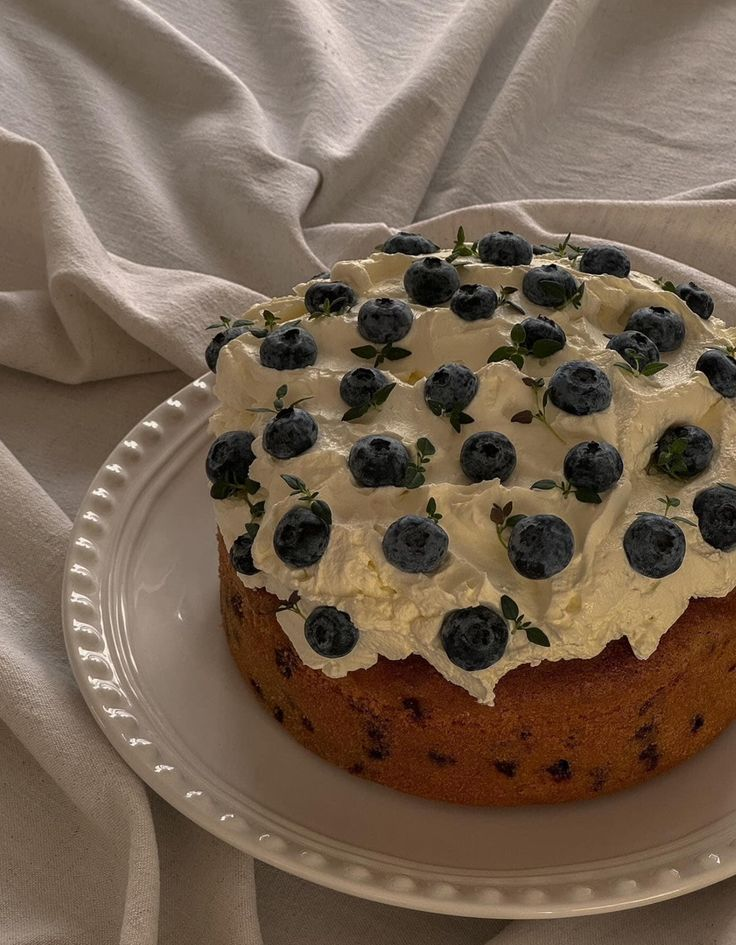

Ingredientes:
- Harina (1/2 tza)
- Azúcar (3/4 tza)
- Polvo para hornear(1 cdta.)
- Ralladura de limón amarillo
- Vainilla(1 cucharada)
- Leche( 1 taza)
- Mantequilla (70 g)
- Huevo (3 medianos)
- Arandanos congelados(2 tzas)
- Yogurt natural (125 g)
Procedimiento:
Precalienta tu horno a 250 c°
- En un pequeño bowl mezcla los secos y reserva a un lado
- Mezcla los huevos hasta que esponjen un poco, agrega el azúcar y bate por 2 min más.
- Agrega el yogurt y la vainilla, mezcla por 1 min
- Poco a poco agrega la leche y la mantequilla derretida
- Por último agrega tu mezcla de secos y bate hasta que no se vea más harina
- Incorpora los arandanos
- Pon tú mezcla en un molde con papel encerado y hornea tú panque por 35 min.
(Recuerda que al meter un palillo este debe salir limpio)
- Una vez listo, deja reposar 15 min a tempetura ambiente
Decoración (opcional)
- Crema para batir sin sabor(100g)
- 1 barra de queso crema (100g)
- Azúcar Glass (150 g)
- Extracto de vainilla (1 cdta.)
Procedimiento
- Agrega el queso a temperatura ambiente un bowl, después acremamos el queso
- Agregamos la crema para batir y el azúcar glass
- batimos hasta lograr la consistencia deseada
La decoración por más sencilla que parezca es escencial que durante todo el proceso
las aspas o globo esten fríos, de está manera sera mucho más facil levantar la crema
¡Tú panque está listo para degustar!!

¡¡Recuerda que puedes sustituir la fruta por la que más te guste!!
Receta con moras